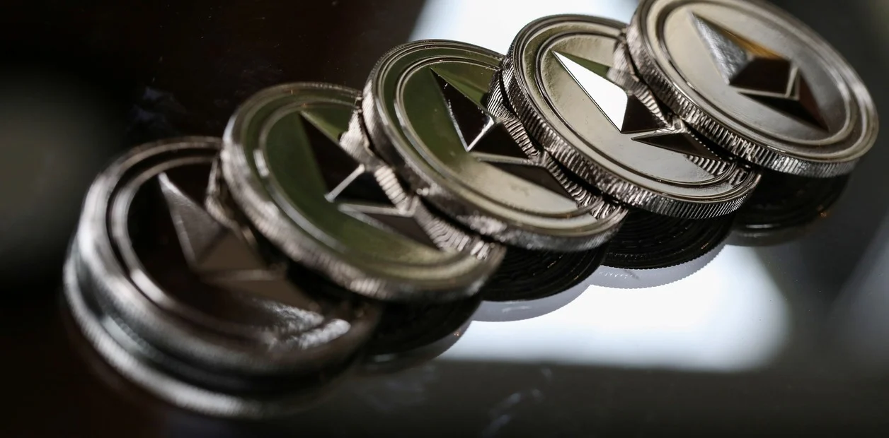

Ethereum, la segunda criptomoneda más importante detrás del bitcoin, está a punto de someterse a un ajuste técnico que va a cambiar significativamente la forma en que se procesan las transacciones, además de reducir su suministro y aumentar drásticamente su precio.
La actualización, conocida como Ethereum Improvement Proposal (EIP) 1559 es similar a un “evento de reducción a la mitad" de bitcoin en el que los ajustes periódicos redujeron la cantidad a futuro del activo digital. Cada operación de este tipo ayudó a impulsar el precio de bitcoin a récords más altos, y eso es lo que estiman que sucederá ahora con ETH.
Si bien bitcoin es la reserva de valor preferida en el ecosistema digital, Ethereum se ha convertido en la infraestructura financiera líder, con más de 12 mil millones de dólares en transacciones diarias, según un informe publicado en febrero de este año.
Algunos especialistas estiman que el ajuste de software que ocurrirá a partir de este jueves debería "quintuplicar fácilmente el precio del éter" para el próximo año.El jueves de la semana pasada, subió un 0,6% a 2.312 dólares.

Amazon se une a las criptomonedas?
Amazon ha confirmado que quiere incorporar a su plantilla a un experto en monedas digitales y blockchain, pero eso no quiere decir, como han empezado a vociferar los agoreros, que Amazon vaya a aceptar criptomonedas como fórmula de pago a corto plazo. Me explico. La oferta de empleo de Amazon está claro que es más que una oferta de empleo: es, por supuesto, toda una declaración de intenciones, aunque más hacia los inversores en Bolsa que hacia los usuarios de criptomonedas. Amazon busca un "líder de producto experimentado para desarrollar la estrategia y la hoja de ruta de productos de la cadena de bloques y las monedas digitales de Amazon", pero ¿por qué iba a querer decir esto que va a aceptar criptomonedas ya? Se prepara para analizar el impacto de las transacciones con criptomonedas a medio y largo plazo, pero eso no quiere decir que las vaya a aceptar a corto plazo. Incluso se pueden plantear en invertir primero en Bitcoin y más adelante, si las criptomonedas maduran, lanzar su propia moneda virtual.